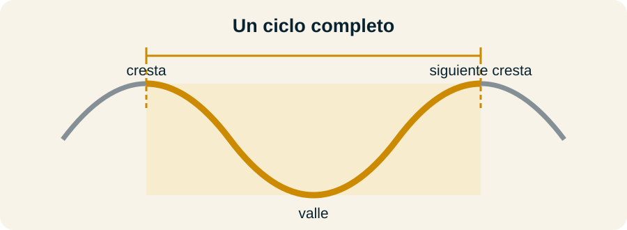
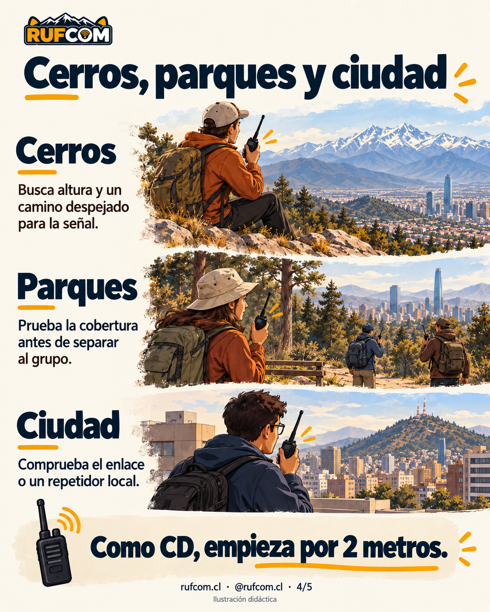

1. ¿Por qué hablamos de metros?

“2 metros”, “70 centímetros” y “10 metros” nombran el largo aproximado de la onda de radio. No indican el alcance ni necesariamente el tamaño de la antena.
Se mide de una cresta a la siguiente: desde un punto alto, baja por el valle y vuelve al siguiente punto alto. Ese recorrido forma un ciclo completo, no solo una curva. La longitud se mide horizontalmente entre las dos crestas, no siguiendo el trazo de la onda.
La frecuencia indica cuántas veces oscila la onda por segundo. La verás expresada en MHz. A mayor frecuencia, más corta la onda.
| Si escuchas… | Piensa en… | Ejemplo |
|---|---|---|
| 2 metros | Una onda de unos 2 m | 145 MHz |
| 70 centímetros | Una onda de unos 70 cm | 435 MHz |
| 10 metros | Una onda de unos 10 m | 29 MHz |
Truco opcional: 300 ÷ frecuencia en MHz ≈ longitud de onda en metros. Por ejemplo, 300 ÷ 145 ≈ 2,07 m.
Los ejemplos explican la relación: no son una lista de frecuencias de llamada.
2. Soy CD: ¿dónde puedo transmitir?
En Chile, el prefijo CD corresponde a la categoría Aspirante. Puedes operar en estas bandas y condiciones:
| Banda | Referencia de frecuencia | Estaciones |
|---|---|---|
| 80 m | 3,5 MHz · HF | Fijas |
| 40 m | 7 MHz · HF | Fijas |
| 10 m | 28 MHz · HF | Fijas |
| 2 m | 144 MHz · VHF | Fijas o móviles |
Recuerda: CD → 80, 40, 10 y 2 metros. Los 70 cm, 6 m y 20 m no están incluidos en esta categoría, aunque tu equipo pueda transmitir allí.
Estas cifras identifican bandas, no sus límites completos. Antes de transmitir, verifica la frecuencia y el modo permitidos en Chile y las condiciones de tu licencia. Un plan extranjero no reemplaza la atribución nacional.
Los aspirantes menores de 15 años necesitan compañía y supervisión de un Novicio, General o Superior para instalar y operar en HF.
3. ¿Qué elijo en cerros, parques y ciudades?

Para hablar cerca, como CD, empieza probando 2 metros. Sirve para aprender comunicación directa y uso de repetidores. Un repetidor recibe tu señal y la retransmite; puede ampliar la cobertura si ambas estaciones logran acceder a él.
| Entorno | Qué probar | Ventaja y límite |
|---|---|---|
| Cerros | Un punto alto con salida hacia la otra estación | La altura ayuda; una montaña entre ustedes puede bloquear la señal. |
| Parque o bosque | Probar el enlace en el recorrido antes de separar al grupo | El equipo portátil es práctico; vegetación y quebradas pueden debilitar la señal. |
| Ciudad | Comunicación directa o un repetidor local | Puede facilitar contactos locales; edificios y ruido pueden complicarlos. |
No existe un alcance fijo para “2 metros”. El resultado cambia con el relieve, la antena, su altura y la estación del otro extremo. Mejorar la ubicación puede ayudar más que aumentar la potencia.
Los 70 cm también se usan para comunicación local y permiten antenas pequeñas, pero no están autorizados para transmitir con categoría CD. Tampoco atraviesan automáticamente cualquier edificio o cerro.
4. ¿Y para hablar lejos?
En HF, la ionosfera puede devolver la señal hacia la Tierra y permitir contactos más allá del horizonte. Las condiciones cambian con la hora y la actividad solar.
- 40 m: una opción versátil para explorar contactos regionales y lejanos; requiere más espacio de antena que 10 m.
- 80 m: útil para explorar contactos regionales, especialmente de noche; sus antenas suelen necesitar bastante espacio.
- 10 m: antenas más pequeñas que en 40 u 80 m y posibles contactos muy lejanos cuando hay apertura; la propagación puede faltar durante largos períodos.
Para CD, el Reglamento autoriza estaciones fijas en estas tres bandas de HF. No asumas que permite toda operación portátil o móvil desde un parque: comprueba el tipo de estación autorizado antes de planificarla.
5. Antes de tu primer contacto
- Elige una banda, frecuencia y modo autorizados para tu licencia.
- Acuerda con la otra persona dónde y cuándo se escucharán.
- Escucha antes de transmitir y usa tu distintivo.
- Prueba el enlace; si falla, revisa ubicación y antena.
Los metros nombran la onda. Tu licencia indica dónde puedes transmitir. El entorno ayuda a decidir cómo lograr el contacto.
Parte simple, aprende en el camino y prueba tu radio. La aventura también se comunica.